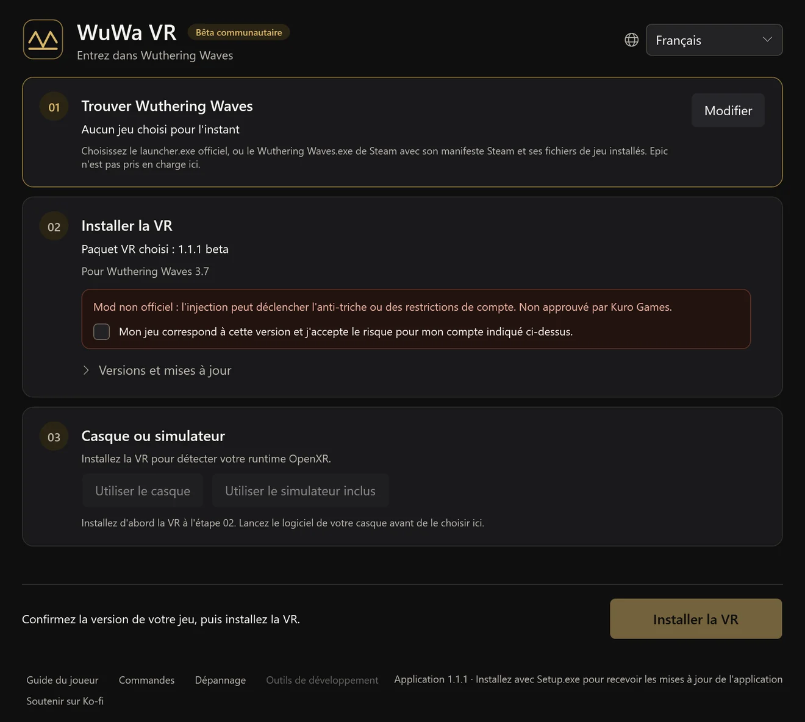
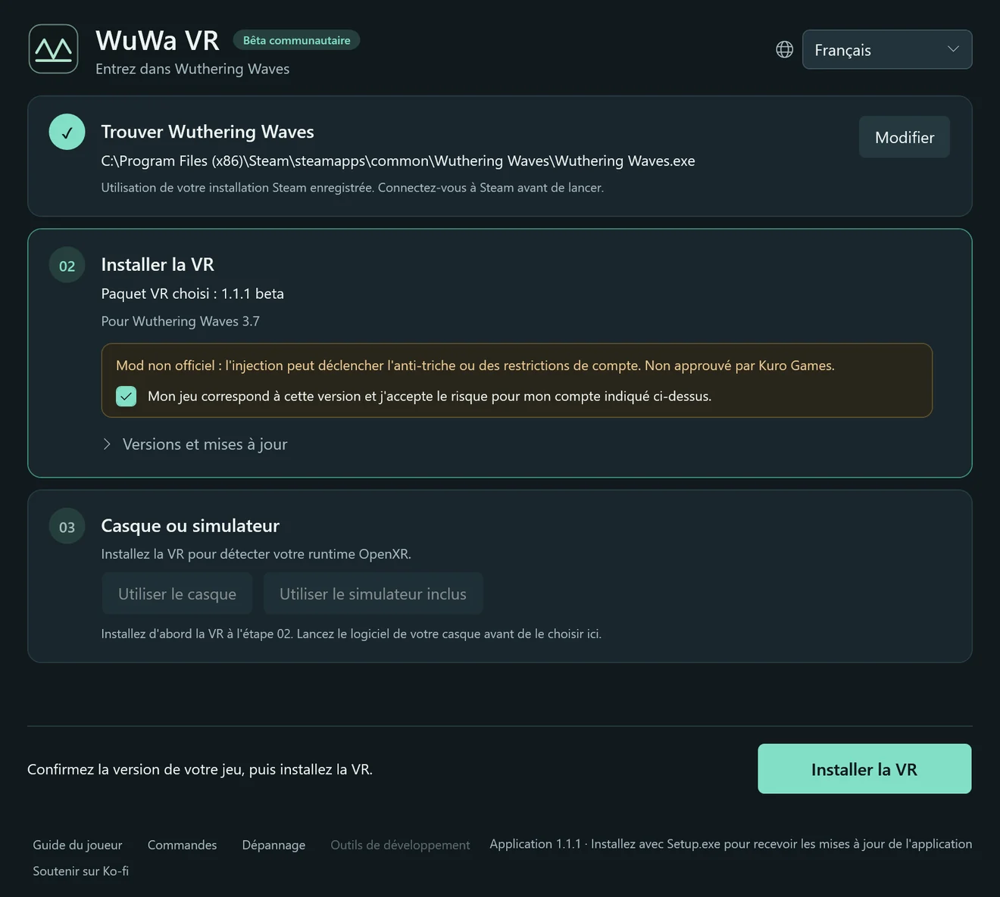
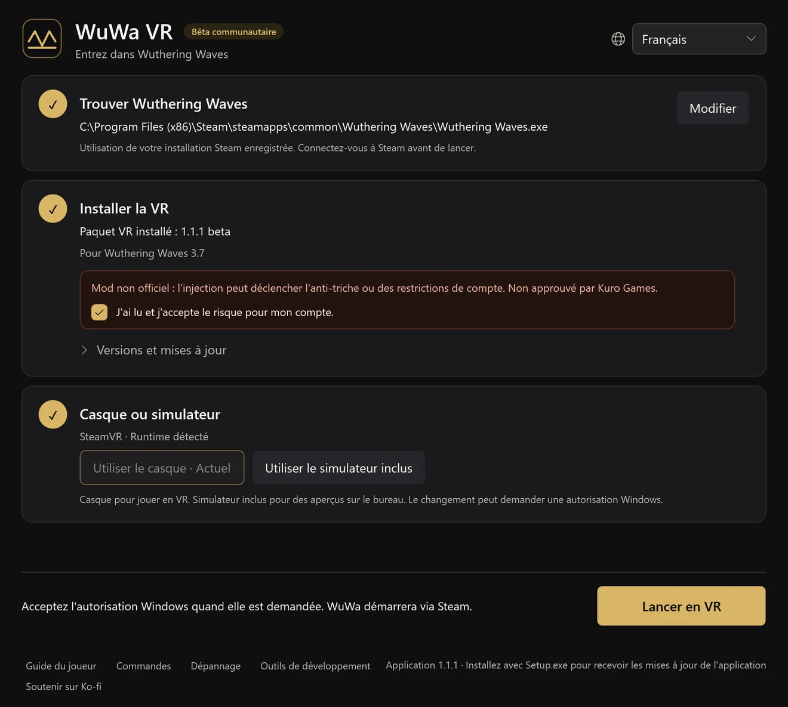

Bêta communautaire1.1.2 · Wuthering Waves 3.7
Entrez dans Wuthering Waves
Un mod VR gratuit, fait par des fans, pour Windows. Parcourez Solaris-3 à taille réelle avec le suivi de la tête, un corps en vue à la première personne et des raccourcis manette. Basé sur UEVR de praydog.
Installez, puis trois étapes
Lancez WuWa-VR-Setup.exe et ouvrez WuWa VR : le launcher vous guide pour la suite. La première installation télécharge le mod VR ; ni Python ni autre outil ne sont nécessaires.
Trouver Wuthering Waves
Choisissez votre jeu sur Steam ou via le launcher officiel de Kuro. Votre choix est enregistré. Epic n'est pas encore pris en charge.
Installer la VR
Lisez l'avertissement sur le risque pour le compte, confirmez la version du jeu et installez. Les mises à jour conservent vos réglages et sauvegardes.
Casque ou simulateur
Démarrez le logiciel de votre casque ou choisissez le simulateur inclus. Puis sélectionnez Lancer en VR et acceptez l'autorisation de Windows.






Écrans réels du launcher, générés par l'application en français. Vos chemins et votre runtime seront différents.
En jeu, L3 + R3 ouvre les réglages d'UEVR. Les options WuWa se trouvent dans VR → WuWa Controls. Guide complet d'installation, de mise à jour et de dépannage (en anglais)
Fait pour jouer, pas seulement pour regarder
VR stéréo et suivi de la tête
Une vraie profondeur dans les casques OpenXR. Menus et HUD restent utilisables, et l'interface peut être déplacée, redimensionnée ou masquée.
Pensé pour la manette
Raccourcis Xbox et, à titre expérimental, PlayStation, avec un aide-mémoire dans la VR sur L3 + Menu.
Corps à la première personne
Voyez les mains et la tenue de votre personnage, tête masquée. Suivi de l'animation en option, avec un mode confort intégré.
Caméras libres
Caméra libre, drone, avion et acrobaties pour explorer et prendre des captures. Expérimental.
Fenêtre 6DOF
Un mode fenêtre facultatif qui place le jeu dans votre pièce. Adapté du travail d'Elliott Tate.
Les deux yeux concordent
Arbres lointains, objets et éclairage indirect concordent dans chaque œil : le monde forme une seule scène.
La première personne, jusqu'à l'animation d'attente
Baissez les yeux : votre personnage est là, avec ses mains, sa tenue et ses animations d'attente, à taille réelle. Masquez les os de la tête pour garder le corps, ou suivez l'animation complète pour une vue plus vivante.
Enregistrez vos propres clips en haute résolution (en anglais)Pas à pas : première personne, image propre et enregistreur intégré.Raccourcis Xbox courants
L3 / R3 désigne une pression sur le stick. View est le bouton aux deux carrés ; Menu, celui aux trois lignes. LB + Y conserve l'action normale du jeu.
| L3 + R3 | Ouvrir / fermer les réglages UEVR |
|---|---|
| L3 + B | Afficher / masquer l'interface et les menus |
| L3 + A | Recentrer la vue / fenêtre |
| L3 + Menu | Afficher / masquer l'aide aux raccourcis |
| L3 + LB | Basculer le réglage HUD / souris, puis relâcher (nouvelles versions candidates) |
| L3 + View | Activer / quitter la première personne |
| Double R3 | Activer / quitter la caméra libre |
| L3 + RB | Caméra du jeu / fixe |
Questions
Quels casques fonctionnent ?
WuWa VR utilise OpenXR. Il a été joué sur un Quest Pro via SteamVR ; d'autres casques OpenXR devraient fonctionner, mais ne sont pas encore vérifiés. Le simulateur inclus permet d'essayer sur un écran ordinaire.
Steam, launcher Kuro ou Epic ?
Steam et le launcher officiel de Kuro sont pris en charge. Epic ne l'est pas encore.
Mon compte peut-il être restreint ?
Oui, c'est possible. Le mod est injecté dans le jeu et l'anti-triche peut le détecter. Kuro Games ne l'a pas approuvé. Lisez l'avertissement avant d'installer.
Windows avertit à propos de l'installateur. Est-ce normal ?
L'installateur n'est pas signé, donc SmartScreen peut afficher un avertissement. Téléchargez-le uniquement depuis la version GitHub du projet et comparez la somme SHA-256. Ne désactivez jamais l'antivirus ni l'anti-triche.
Comment fonctionnent les mises à jour ?
L'application vérifie ses propres mises à jour et demande avant de redémarrer. Les paquets VR se mettent à jour séparément à l'étape 02, et vous pouvez revenir à une version installée précédente.
Mes fichiers de jeu sont-ils modifiés ?
Non. Le launcher ne touche pas aux fichiers du jeu ; le mod VR est injecté au lancement.
Comment désinstaller ?
Utilisez Dépannage → Préparer la désinstallation dans l'application, puis supprimez WuWa VR dans Paramètres Windows → Applications. Réglages, sauvegardes et enregistrements sont conservés sauf si vous les supprimez.
C'est gratuit ?
Oui. C'est un projet de fans gratuit et le launcher est open source sous licence MIT. Le soutien sur Ko-fi est facultatif et n'achète aucune garantie.
Limites connues
- Le démarrage via Steam échoue encore sur certains PC ; un correctif est en test. Le passage par le launcher officiel de Kuro est le plus testé.
- Certains chargements de scènes et de dialogues peuvent se bloquer, et les menus plats peuvent afficher un arrière-plan en mouvement.
- L'actualisation du format du HUD n'est pas fiable ; une partie de l'éclairage des PNJ, des reflets et du brouillard reste à tester.
- Le passage automatique aux cinématiques est expérimental et désactivé par défaut ; il n'a pas été testé avec une vidéo précalculée.
Open source, téléchargements vérifiables
Le launcher de bureau est open source sous licence MIT et nos modifications du mod sont publiques. Chaque version est livrée avec le code source correspondant et des sommes SHA-256.
Les rapports VirusTotal n'ont pas encore été vérifiés pour cette version. Aucune analyse propre ni certification de sécurité n'est revendiquée.
Participer aux améliorations
Écrivez dans la langue de votre choix. Préparez un brouillon, relisez-le sur GitHub et envoyez-le vous-même. Rien n'est publié automatiquement. L'envoi sur GitHub nécessite une connexion ; copier un brouillon ne nécessite pas de compte.
Le dépôt GitHub public n'est pas encore connecté. Vous pouvez copier le brouillon ; il n'a pas été envoyé.
Votre brouillon — à relire avant partage
Construit sur le travail de la communauté
WuWa VR repose sur le travail de praydog et des contributeurs d'UEVR, de mirudo2, polar, SannpoKun, Indath, endlessfalls et Elliott Tate.